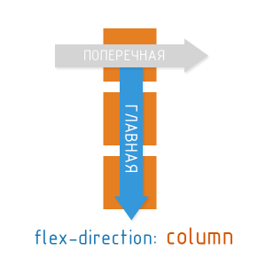
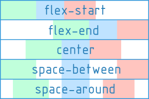
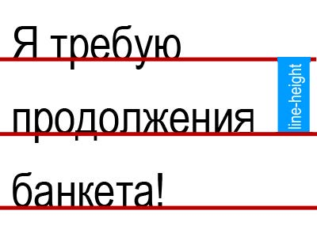

Web и DHTML
Свойства CSS
Леонид Волканин
ИМКН УрФУ

Размеры области содержимого в прямоугольнике зависят от того, что именно является содержимым элемента (текст, таблица или другие элементы), заданы ли свойства элемента width и height и т. д.
Текст абзаца
<p style="background: yellow; color: blue; margin: 20px 25%; padding: 10px; border: thick solid green">Текст абзаца</p>
размер-границы = размер | процент | auto | inherit
размер — задает фиксированный размерпроцент — вычисляется относительно ширины вмещающего блока, даже для вертикальных границauto — вычисляется в зависимости от типа и позиционированияinherit — включить наследование (по умолчанию нет)По умолчанию значение — 0, допускаются отрицательные значения
Свойство margin — сокращение для margin-top, margin-bottom, margin-left и margin-right
body { margin: 1em } /* все границы равны 1em */body { margin: 1em 2em } /* top & bottom = 1em, right & left = 2em */body { margin: 1em 2em 3em } /* top=1em, right=2em, bottom=3em, left=2em */body { margin: 1em 2em 3em 4em } /* top=1em, right=2em, bottom=3em, left=4em */
Соседние границы объединяются в одну, новой ширины
Вертикальные границы могут сливаться:
Горизонтальные границы не сливаются никогда
размер-заполнителя = размер | процент | inherit
размер — задает фиксированный размерпроцент — вычисляется относительно ширины вмещающего блока, даже для вертикальных границinherit — включить наследование (по умолчанию нет)По умолчанию значение — 0, отрицательные значения не допускаются
Свойство padding — сокращение для padding-top, padding-bottom, padding-left и padding-right
body { padding: 1em } /* все границы равны 1em */body { padding: 1em 2em } /* top & bottom = 1em, right & left = 2em */body { padding: 1em 2em 3em } /* top=1em, right=2em, bottom=3em, left=2em */body { padding: 1em 2em 3em 4em } /* top=1em, right=2em, bottom=3em, left=4em */
Универсальное сокращение — border
размер-рамки = thin | medium | thick | размер
thin, medium, thick — размер зависит от обозревателяразмер — фиксированный размерПо умолчанию — medium ( 0, если border-style 'none' или 'hidden'), отрицательные значения не допускаются
стиль-рамки = none | hidden | dotted | dashed | solid | double | groove | ridge | inset | outset
dotted, dashed, solid, double, groove, ridge, inset, outset
Размер рамки border-width и цвет border-color задаются по тем же правилам, что и для заполнителя, от 1 до 4 значений
Для справки — кроме border есть ещё outline
Не влияет на положение блока и его ширину
Для каждого элемента генерируется нуль или более прямоугольников
Внешний вид и расположение этих прямоугольников определяется:
displaypositionСвойство display
block — блочный элементinline — текстовый элементlist-item — элемент списка (как текстовый, плюс маркер)marker — маркер спискаrun-in — присоединяемый элемент (если следующий за данным элемент — блочный, то форматируется как его первый текстовый элемент)Свойство display
compact — компактный элемент (если следующий за данным элемент — блочный, то форматируется как однострочный текст и помещается на границе блока)none — элемент и все его потомки игнорируются при отображении.table, inline-table — блочная или текстовая таблицаtable-row-group, table-header-group, table-footer-group, table-row, table-column-group, table-column, table-cell, table-caption — внутренности таблицыСвойство position
static — отображается в обычном потокеrelative — сначала генерируется прямоугольник в обычном потоке, затем смещается на величины, заданные left и topabsolute — позиция элемента вычисляется относительно позиции его ближайшего позиционированного предкаfixed — абсолютно позиционирован, дополнительно зафиксирован относительно окна/страницы, т.е. неподвижен при прокруткеz-index)<div style="position: relative; left: 0; top: 0; height: 50px"><img src="leaf.png" style="position: absolute; left: 300px; top: 0"></div>
Часть текста будет скрыта рисунком, потому что он позиционирован поверх текста
Отображаются в обычном потоке, но с заданным смещением
<p>Пример вывода текста в верхнем индексе:<span style="position: relative; top: -1ex">abc</span>.</p>
Пример вывода текста в верхнем индексе: abc.
Свойства top, bottom, left, right
размер — задаёт фиксированное смещениепроцент — вычисляется относительно высоты или ширины вмещающего блокаauto — положение элемента по умолчанию в обычном потокеinherit — включить наследование (по умолчанию нет)float со значением left или right указывает, что элемент является плавающим и задает его выравнивание влево или вправоclear — как данный элемент не может обтекать плавающий
Запрет означает, что данный элемент должен отображаться ниже предыдущего плавающего элемента
none — по умолчанию, нет запретаleft right both inherit — включить наследование (по умолчанию нет)w3.org/TR/css3-flexbox — относительно новая спецификация
display:flex или display:inline-flex
Возникает 2 оси: основная и поперечная
row (по умолчанию) — слева направо (в rtl справа налево)row-reverse — справа налевоcolumn — сверху внизcolumn-reverse — снизу вверх
Гибкие элементы в контейнере укладываются в одну строку, даже если не помещаются в контейнер (выходят за границы)
nowrap (по умолчанию) — в одну строку слева направоwrap — гибкие элементы строятся в многострочном режиме, перенос по направлению кросс оси, сверху внизwrap-reverse — как wrap, но перенос происходит снизу вверхЕсть сокращение: flex-flow: flex-direction flex-wrap
justify-content — выравнивание по главной оси
align-items — выравнивание по поперечной оси
 и 
width: размер | процент | auto | inherit
height: размер | процент | auto | inherit
Применимо к элементам кроме текстовых, строк таблиц и групп строк
Дополнительно — min-width и max-width, min-height и max-height
http://www.w3.org/TR/css3-box/#Calculating
Вычисленные значения свойств width / height, margin-*, left, right, top и bottom зависят от типа прямоугольника
Как правило, вычисленное значение совпадает с заданным (кроме auto), но есть и исключения
width и height — это размеры чего?
Свойство box-sizing: (CSS 3)
content-box — width и height задают ширину и высоту контентаborder-box — width и height включают в себя padding и border, но не margin (так работает IE в quirks mode)padding-box — width и height включают в себя padding, но не border и margininherit — включить наследованиеИногда часть содержимого оказывается за пределами прямоугольника
Свойство overflow определяет правила обрезки содержимого
visible — по умолчанию, не обрезаем, вылезаем за пределыhidden — обрезаем, размер и форма задается свойством clipscroll — обрезаем и даём прокрутку (но печатаем всё)auto — пусть браузер сам решаетЕсли бы строители строили здания так же, как программисты пишут программы, первый залетевший дятел разрушил бы цивилизацию.
Второй закон Вейнберга
Свойство clip определяет область обрезки содержимого
auto — по умолчанию, область совпадает с объемлющим прямоугольникомrect(top,right,bottom,left) — область является прямоугольником с координатами, заданными смещениями от сторон объемлющего прямоугольника, отрицательные смещения допускаютсяСвойство visibility задает видимость элемента при отображении
visiblehiddencollapse (в таблицах)Невидимость элемента означает, что его область становится прозрачным, но продолжает занимать свое место
Сравните с display: none
свойство color автоматически наследуется
Фон распространяется на содержимое и заполнитель (padding)
background-colorbackground-image: url(...), background-repeat, background-attachment и background-positionСокращение — background
p { background: url('b.gif') gray 50% repeat fixed}
h2 {font: italic small-caps 700 36px/1.2 Arial, sans-serif;}
Результат: Наш текст
Устанавливает семейство шрифта
h2 {font-family: "Textbook New", Robot, sans-serif;}
Размер шрифта (от базовой линии до верхней границы кегля)
h2 {font-size: 100px}
Устанавливает интерлиньяж (межстрочный интервал) текста

Устанавливает насыщенность шрифта
h2 {font-weight: normal | bold | 700 (100-900) | ...}
Результат: Наш текст
Как нужно представлять строчные буквы
h2 {font-variant: normal | small-caps}
Я small-caps текст, Я обычный текст
Определяет начертание шрифта
h2 {font-style: normal | italic | oblique;}
Я курсивный текст, Я наклонный текст
@font-face {font-family: 'Textbook New';font-style: normal;font-weight: 400;src: url('//curl.com/2T_f.woff') format('woff');}
Яндекс.Субботник — Использование пользовательских шрифтов
Устанавливает величину отступа первой строки блока текста
p {text-indent: -1em}
«После детального ознакомления с ТЗ, мне кажется, что наш проект очень сильно походит на велосипед на костылях...
Устанавливает выравнивание текста
p {text-align: center | right | justify | left ;}
xxx: Как поиск так гугл, а как пинговать так Яндекс.
Вертикальное выравнивание (не только текста)
p {vertical-align: baseline | bottom | middle | sub | super | text-bottom | text-top | top | inherit | значение | проценты}